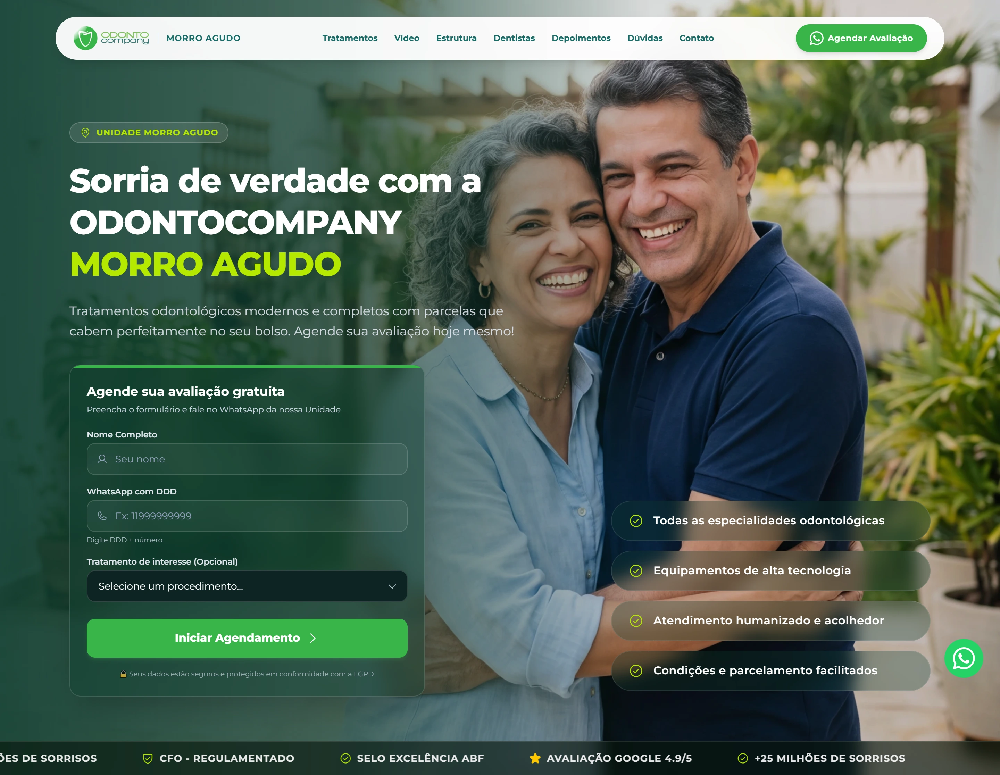
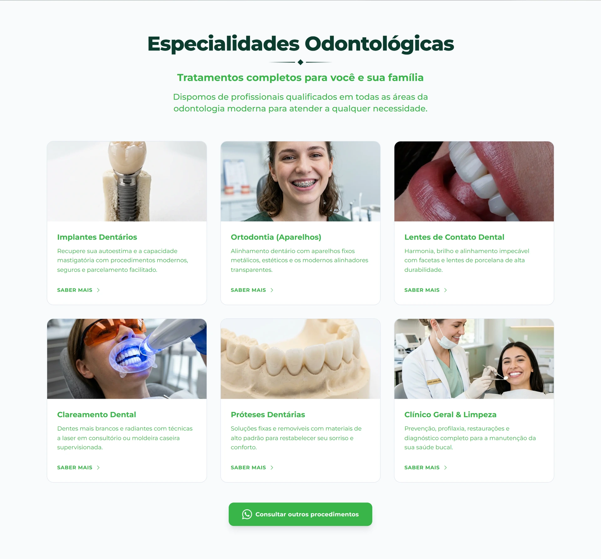

Unidade em evidência
Morro Agudo aparece na mensagem principal. A identificação local distingue esta página da comunicação genérica da rede.
UI / UX
Design & desenvolvimento
Landing page
Uma rede conhecida. Um atendimento local.

AmpliarO ponto de partida
A página apresenta a unidade Morro Agudo da OdontoCompany. Ela reúne uma marca de rede e informações específicas de uma clínica: tratamentos, estrutura, profissional responsável, dúvidas e contato.
A abertura oferece um formulário de interesse. A leitura pode continuar pelas especialidades e pela unidade antes que a pessoa decida iniciar o agendamento.
Morro Agudo aparece na mensagem principal. A identificação local distingue esta página da comunicação genérica da rede.
Nome, telefone e interesse em procedimento compõem o formulário inicial. A primeira interação fica concentrada em informações de contato.
Especialidades, estrutura e perguntas frequentes ficam disponíveis no percurso. A página oferece contexto além do convite para agendar.

AmpliarDesenvolvimento
A interface combina um formulário na abertura, navegação por seções e perguntas frequentes expansíveis. Há também uma sequência de seleção de interesse com opções de procedimentos.
O formulário usa campos de nome e telefone e uma seleção de procedimento. Na apresentação do portfólio, nenhum dado foi enviado: a inspeção verificou a estrutura disponível, não o recebimento de leads ou integrações do atendimento.
O caso se limita à landing page da unidade Morro Agudo. Alegações clínicas, depoimentos e condições comerciais que aparecem no site não são validados nem usados como prova de resultado deste trabalho.